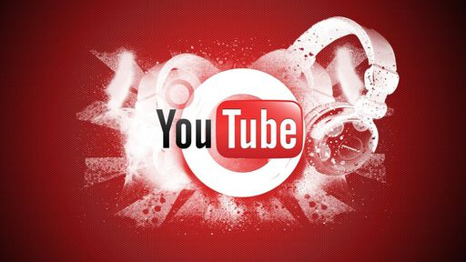

YouTube é considerado principal meio de propagação de fake news

As redes sociais podem ser consideradas grandes canais de desinformação, já que a disseminação de fake news é comum no Facebook, Instagram e WhatsApp. No entanto, uma carta assinada por mais de 80 grupos de checagem de factos afirma que o YouTube se destaca quando o assunto é espalhar boatos globalmente na web.
Diversas instituições incluindo o Full Fact, do Reino Unido, e o Fact Checker, do Washington Post, afirmam que a plataforma de streaming é o principal canal de desinformação da internet. Por exemplo, a carta afirma que conteúdos de grupos como o Doctors for the Truth espalham informações falsas sobre o coronavírus sem grandes punições no serviço.
“O YouTube está a permitir que a sua plataforma seja armada por atores sem escrúpulos para manipular e explorar outros, e para se organizar e arrecadar fundos. As medidas atuais estão a mostrar-se insuficientes”, afirma um trecho da carta para a CEO do YouTube, Susan Wojcicki.
Não Perca

Rainbow Six Extraction chega ao Xbox Game Pass no lançamento
Ler Mais >>

WhatsApp mostra fotos de contatos em notificações no iPhone
Ler Mais >>
Bitcoin volta a subir e bate recordes de valorização
Ler Mais >>

Popcorn Time, concorrente pirata da Netflix, é encerrado
Ler Mais >>